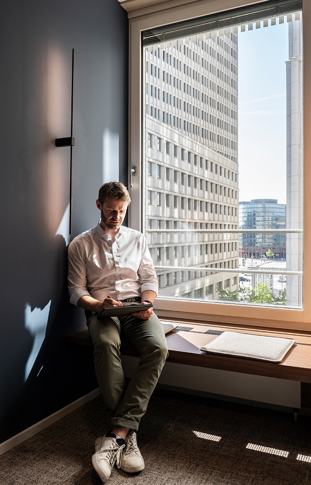
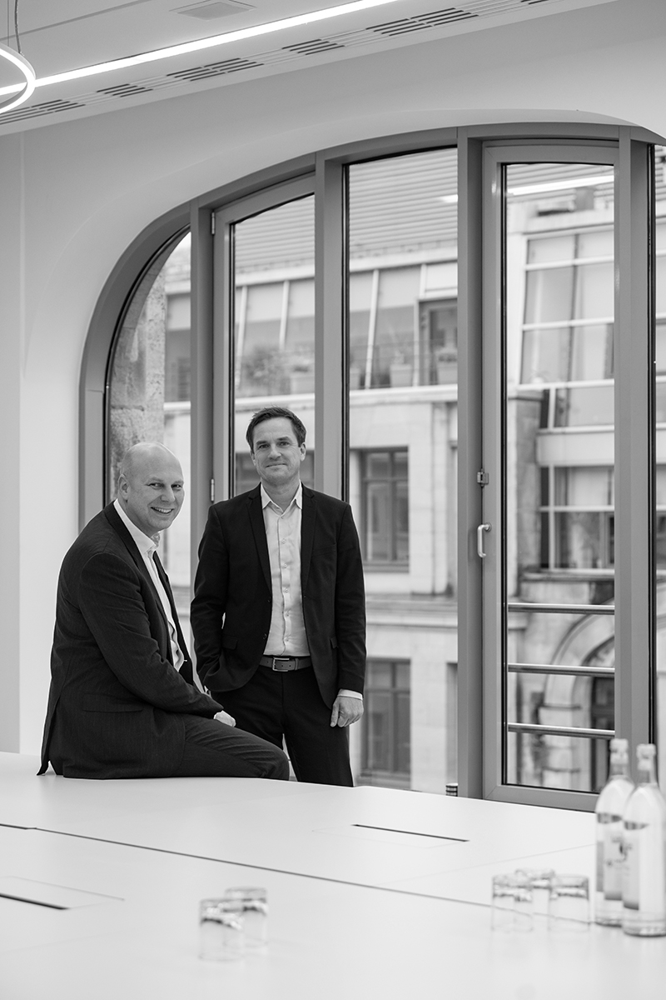
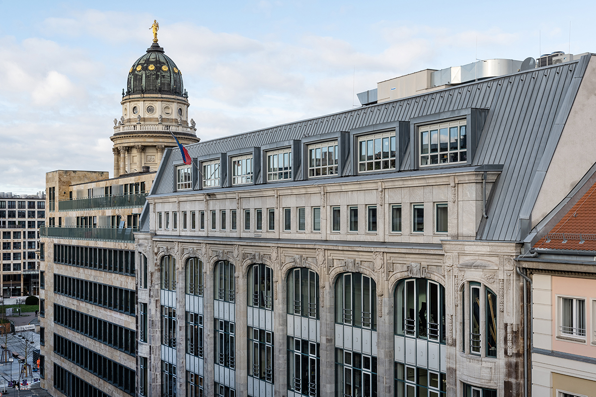
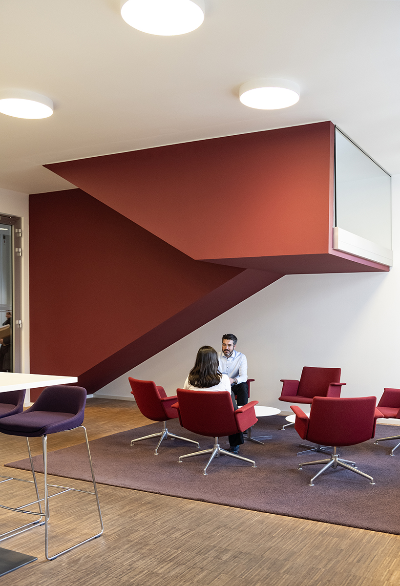
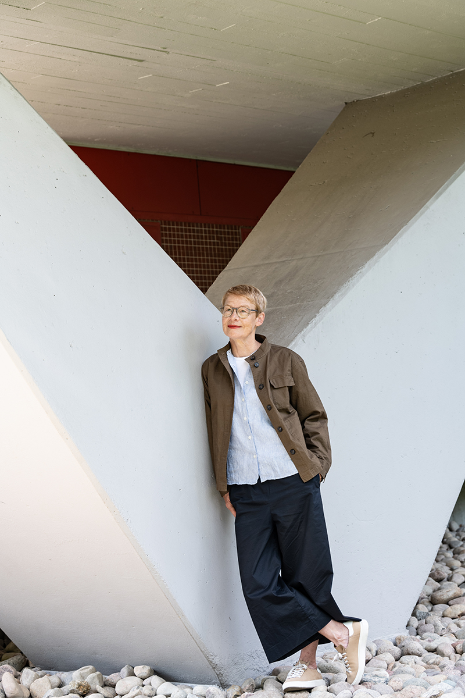

Projekt ansehen
Projekt ansehen
Anke Illing
Porträtfotografie für Führungspersönlichkeiten, die Zukunft gestalten
In Berlin und bundesweit unterstütze ich Unternehmerinnen, Vorstände, Geschäftsführer und Führungskräfte dabei, ihre Haltung und Vision in der visuellen Kommunikation sichtbar zu machen.
Sie gestalten Transformation, führen Ihre Teams mit Respekt und setzen auf transparente Kommunikation, Offenheit und nachhaltiges Handeln.
Genau diese Werte übersetze ich in visuelle Botschaften.
Ein charakterstarkes Porträt transportiert Ihre Souveränität, zeigt Ihre menschliche Nahbarkeit und unterstreicht Ihren unternehmerischen Erfolg. So werden Sie als Vorbild wahrgenommen und schaffen echtes Vertrauen bei Mitarbeitenden, Partnern und Kunden.
Lassen Sie uns Ihre Haltung sichtbar machen und vereinbaren Sie ein unverbindliches Kennenlerngespräch.
Kennenlerngespräch vereinbaren
Kundenstimmen

Expertise
Durch eine sorgfältige und strategische Vorbereitung verläuft jedes Shooting maximal effizient für Sie und Ihr Team. Sie gewinnen ausdrucksstarke Porträts mit klarer Haltung, ohne Ihren Terminkalender zu belasten.
Mit mehr als 20 Jahren Erfahrung gestalte und realisiere ich visuelle Konzepte für lokale wie globale Unternehmen und Führungskräfte.
Zu meinen langjährigen Kunden zählen unter anderem:
- C.F. Møller Architekten Berlin
- Bund Deutscher Architektinnen und Architekten BDA Berlin
- Anne Lampen Architekten
- Baumschlager Eberle Architekten Berlin
- CMS Hasche Sigle Rechtsanwälte
- GSK Stockmann Rechtsanwälte
- DEGES
- Adina Hotels
- Roland Berger Unternehmensberatung
- Georg Neumann GmbH
- DIN e.V.
Referenzen
Platzhalter – Hier stehen später ausgewählte Referenzprojekte: für wen ich fotografiert habe, was die Aufgabe war und wo die Bilder heute eingesetzt werden.
Platzhalter – Ein zweiter Absatz, zum Beispiel über langjährige Zusammenarbeiten mit Architekturbüros, Kanzleien und Unternehmen oder über Veröffentlichungen in Magazinen und Geschäftsberichten.


Corporate Fotografie
Ein überzeugender Markenauftritt basiert auf Vertrauen, Haltung und den Menschen hinter Ihrem Unternehmen. Als Spezialistin für Unternehmensfotografie übersetze ich Ihre Corporate Identity in eine ausdrucksstarke visuelle Sprache, die Ihren Markenauftritt nachhaltig stärkt.
Im Fokus stehen natürliche und sympathische Porträts von Führungskräften und Teams, die eine perfekte Balance aus Professionalität und Nahbarkeit ausstrahlen. Gleichzeitig machen lebendige Einblicke in Ihren Arbeitsalltag Ihre individuelle Unternehmenskultur für Partner, Kunden und Bewerber greifbar.
Damit das Shooting nahtlos in Ihren Arbeitsalltag passt, lege ich besonderen Wert auf eine effiziente Organisation und eine strukturierte Umsetzung vor Ort.
Welches Projekt möchten Sie visualisieren? Schreiben Sie mir.
Projekt anfragen Projekt ansehen
Projekt ansehen

Projekt ansehen

Personal Branding Porträts
Für Aufsichtsräte, Keynote-Speaker und Coaches – visuelle Präsenz, die Ihren Expertenstatus auf Konferenzen, in Fachmedien, auf Ihrer eigenen Website und auf LinkedIn unmissverständlich untermauert.
Im intensiven Dialog erarbeiten wir ein maßgeschneidertes Konzept – von der strategischen Ausrichtung über die sorgfältige Organisation bis zur Auswahl der perfekten Location.
Das Ergebnis sind ausdrucksstarke Porträts von höchster Ästhetik, die Ihre Haltung unterstreichen und Ihre Qualität auf den ersten Blick sichtbar machen.
Lassen Sie uns Ihre Expertise sichtbar machen. Vereinbaren Sie ein unverbindliches Kennenlerngespräch.
Kennenlerngespräch vereinbaren